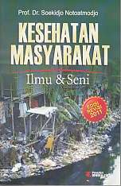

Berita Kesehatan seputar Produk dan Layanan kesehatan Indonesia - KONTAN
2021.06.04 18:55

Kesehatan Home Covid-19 Kecantikan & Kebugaran Kesehatan Anak Kesehatan Umum Penyakit Menular Produk dan Layanan Reproduksi dan Seks Tips Sehat Login Daftar
Satgas Covid-19: Pembukaan sektor pendidikan bertahap, sesuai kesiapan daerah
Pemerintah setempat harus memastikan bahwa kesehatan, keselamatan dan keamanan siswa menjadi prioritas utama.
Jumat, 04 Juni 2021 | 17:58 WIB
UPDATE Vaksinasi Covid-19, lebih dari 11 juta orang telah menerima 2 dosis vaksin
Jumat, 04 Juni 2021 | 16:05 WIB
Seberapa lama tubuh Anda kebal terhadap infeksi Covid-19?
Jumat, 04 Juni 2021 | 16:05 WIB
Tak hanya mengobati diabetes, ini manfaat oyong untuk kesehatan
Jumat, 04 Juni 2021 | 15:38 WIB
5 Cara mengatasi mata merah, bisa pakai bahan alami, lo
Jumat, 04 Juni 2021 | 15:33 WIB
4 Gejala penyakit liver ini bisa terjadi pada tubuh Anda
Jumat, 04 Juni 2021 | 15:30 WIB
Kenali efek samping sereh untuk kesehatan
Jumat, 04 Juni 2021 | 14:58 WIB
Belum banyak diketahui, ini manfaat kecipir untuk kesehatan
Jumat, 04 Juni 2021 | 14:28 WIB
5 Minuman segar yang efektif membantu menurunkan kolesterol tinggi
Jumat, 04 Juni 2021 | 13:59 WIB
Takokak efektif menurunkan asam urat tinggi
Jumat, 04 Juni 2021 | 13:20 WIB
Kayu manis efektif menurunkan gula darah, ini sederet penelitiannya
Jumat, 04 Juni 2021 | 12:11 WIB
6 Cara membersihkan pembuluh darah, tertarik mencoba?
Jumat, 04 Juni 2021 | 11:59 WIB
Efektif, ini 5 skincare untuk menghilangkan bekas jerawat
Jumat, 04 Juni 2021 | 11:09 WIB
7 Manfaat nanas untuk kesehatan: menurunkan asam urat sampai dara tinggi
Jumat, 04 Juni 2021 | 10:05 WIB
Meski zona oranye, disiplin protokol kesehatan tetap harus diterapkan
Jumat, 04 Juni 2021 | 10:00 WIB
Berada di zona oranye? Tetap waspada dan berpikir positif
Jumat, 04 Juni 2021 | 09:44 WIB
China mengonfirmasi adanya virus flu burung H10N3, dapatkah memicu pandemi?
Jumat, 04 Juni 2021 | 09:25 WIB
Direktur Utama PGJO memilih tidak memasuki daerah yang punya potensi penyebaran Covid
Jumat, 04 Juni 2021 | 09:14 WIB
Makanan yang baik dikonsumsi penderita stroke agar tidak kambuh lagi
Jumat, 04 Juni 2021 | 08:57 WIB
7 Herbal untuk menurunkan asam urat dalam tubuh, apa saja?
Loadmore Terpopuler Profesi PNS jadi idaman, ini daftar gaji terbaru PNS 2021 Di luar dugaan, sebuah studi mengungkapkan 15% penduduk Indonesia terinfeksi Covid-19 Cara mencegah kerugian investasi uang kripto seperti Bitcoin, Ethereum, Degocoin dll Jangan Lewatkan Takokak efektif menurunkan asam urat tinggi Kayu manis efektif menurunkan gula darah, ini sederet penelitiannya Tak hanya mengobati diabetes, ini manfaat oyong untuk kesehatan Belum banyak diketahui, ini manfaat kecipir untuk kesehatan 6 Cara membersihkan pembuluh darah, tertarik mencoba? 5 Minuman segar yang efektif membantu menurunkan kolesterol tinggi 4 Gejala penyakit liver ini bisa terjadi pada tubuh Anda 2020 @ Kontan.co.id All rights reserved.
Informasi Seputar Kesehatan | Halodoc Berita. 4 Dampak Radiasi Ponsel bagi , Gangguan Serius Reproduksi dan Kesuburan. 1 hari lalu · Berita. Kolaborasi OKI, LIPI Perkuat Riset Produk .
Kementerian Kesehatan Republik Indonesia Berbagai berita umum, anak, reproduksi dan seks, kecantikan dan kebugaran, penyakit menular, dan produk serta layanan di Indonesia.